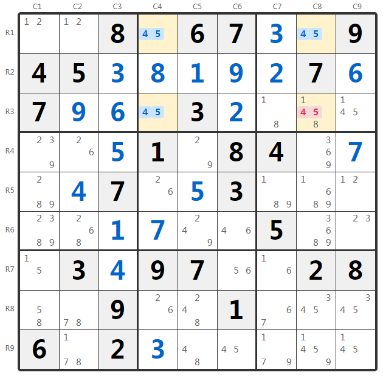
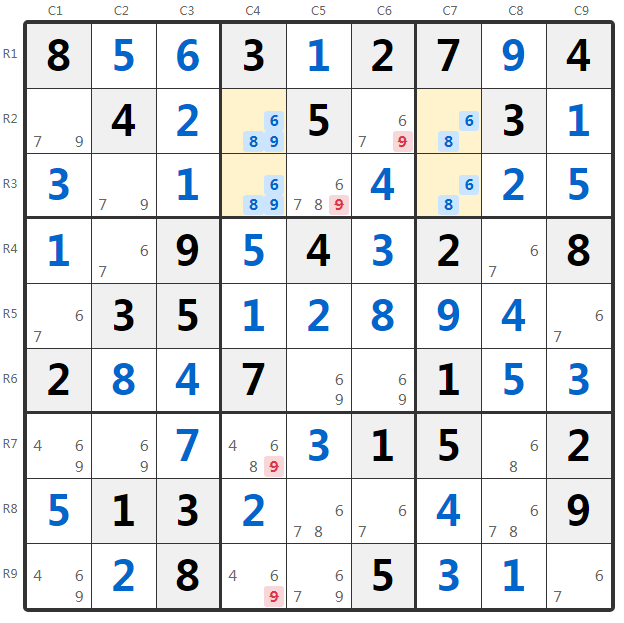
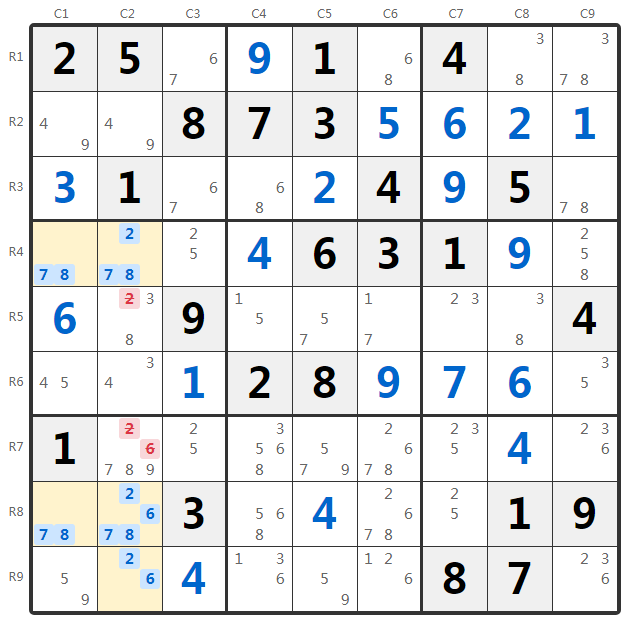
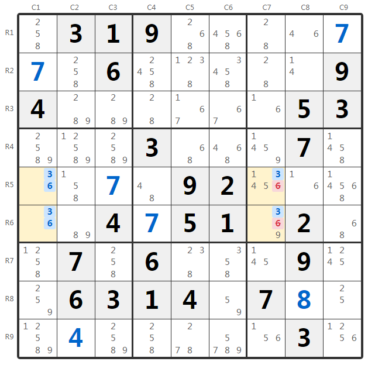

数独唯一矩形技巧详解：类型1/2/3/4完整攻略
唯一矩形（Unique Rectangle，简称UR）是数独高级技巧中非常重要的一类方法，它利用了数独必须有且仅有一个解的规则来推导。当盘面中出现可能形成"致死模式"（Deadly Pattern）的矩形结构时，我们可以据此排除某些候选数，从而保证唯一解的存在。
如果四个格子（位于两行两列的交叉处，且恰好分布在两个宫中）都只剩下相同的两个候选数{a, b}，那么这四个格子的填法将有两种可能（形成致死模式），导致数独出现多解。由于正规数独必须唯一解，所以这种模式不可能出现，我们可以利用这一点来排除候选数。
唯一矩形技巧根据矩形中格子的候选数分布情况，分为多种类型。本文将详细讲解最常见的四种类型：Type 1（基础型）、Type 2（同余型）、Type 3（数组型）和Type 4（强链型）。
术语说明
- 地板格（Floor）：矩形中只有两个候选数{a, b}的格子，这些格子如果全部保留原样会形成致死模式
- 屋顶格（Roof）：矩形中除了{a, b}还有其他候选数的格子，这些额外候选数是打破致死模式的关键
- UR对角数（UR Pair）：形成唯一矩形的两个候选数{a, b}
在阅读本文前，建议先掌握数独行列宫的命名规则和基本的候选数技巧。
类型1：基础型（Type 1）
Type 1是最简单、最直观的唯一矩形类型。它的特征是：矩形四格中，三个是地板格（只含{a, b}），一个是屋顶格（含{a, b}和其他候选数）。
Type 1 规则
如果唯一矩形的四个格子中，三个只含{a, b}，一个含{a, b, x...}，
那么该屋顶格必须填入x...中的某个数（不能填a或b），因此可以从屋顶格删除a和b。
实例分析

观察盘面，我们发现以下四个格子形成矩形结构：
- R1C4：候选数 {4, 5}（地板格）
- R1C8：候选数 {4, 5}（地板格）
- R3C4：候选数 {4, 5}（地板格）
- R3C8：候选数 {1, 4, 5, 8}（屋顶格，含额外候选数1, 8）
这四个格子位于第1行、第3行与第4列、第8列的交叉处，且分布在宫2和宫3中，满足唯一矩形的条件。
唯一矩形Type 1：R1C4、R1C8、R3C4、R3C8 包含 {4, 5}
从 R3C8 删除候选数 4 和 5，保留 {1, 8}
类型2：同余型（Type 2）
Type 2的特征是：矩形四格中，两个是地板格（只含{a, b}），两个是屋顶格，且两个屋顶格包含相同的额外候选数x。
Type 2 规则
如果唯一矩形有两个地板格{a, b}和两个屋顶格{a, b, x}（额外候选数相同），
那么两个屋顶格中至少有一个必须填x（否则变成致死模式），因此能同时看到两个屋顶格的其他格子可以删除候选数x。
实例分析

观察盘面中的唯一矩形结构：
- R2C4：候选数 {6, 8, 9}（屋顶格）
- R2C7：候选数 {6, 8}（地板格）
- R3C4：候选数 {6, 8, 9}（屋顶格）
- R3C7：候选数 {6, 8}（地板格）
两个屋顶格R2C4和R3C4都有额外候选数9，且它们在同一列（第4列）。
- R2C6（第2行能看到R2C4）：删除候选数 9
- R3C5（第3行能看到R3C4，宫2能看到R2C4）：删除候选数 9
- R7C4（第4列）：删除候选数 9
- R9C4（第4列）：删除候选数 9
唯一矩形Type 2：R2C4、R2C7、R3C4、R3C7 包含 {6, 8}，额外候选数 9
从 R2C6、R3C5、R7C4、R9C4 删除候选数 9
类型3：数组型（Type 3）
Type 3结合了唯一矩形和隐性/显性数组技巧。两个屋顶格有不同的额外候选数，这些额外候选数与同一单元内的其他格子形成数组关系。
Type 3 规则
如果两个屋顶格分别含{a, b, x}和{a, b, y}（或{a, b, x, y}等组合），
并且这些额外候选数{x, y...}与同行/列/宫中的其他格子形成显性数组，
那么该单元中其他格子可以按数组规则删除相应候选数。
实例分析

观察唯一矩形结构：
- R4C1：候选数 {7, 8}（地板格）
- R4C2：候选数 {2, 7, 8}（屋顶格，额外候选数2）
- R8C1：候选数 {7, 8}（地板格）
- R8C2：候选数 {2, 6, 7, 8}（屋顶格，额外候选数2, 6）
- R5C2：删除候选数 2
- R7C2：删除候选数 2 和 6
唯一矩形Type 3：R4C1、R4C2、R8C1、R8C2 包含 {7, 8}
屋顶格必须保留 {2, 6} 中至少一个，与 R9C2 形成数组，锁定第2列的 {2, 6}
从 R5C2 删除 2，从 R7C2 删除 2 和 6
类型4：强链型（Type 4）
Type 4利用了强链的概念。当两个屋顶格在同一行/列/宫中，且UR对角数中的某一个在该单元只出现在这两个屋顶格时，可以进行特殊的排除。
Type 4 规则
如果两个屋顶格在同一单元（行/列/宫），且UR对角数a在该单元只出现在这两个屋顶格，
那么这两个屋顶格中必有一个填a（强链关系），不能两个都填b，因此可以从两个屋顶格删除另一个UR对角数b。
实例分析

观察唯一矩形结构：
- R5C1：候选数 {3, 6}（地板格）
- R5C7：候选数 {1, 4, 5, 6, 8}（含3, 6的屋顶格？实际需检查）
- R6C1：候选数 {3, 6}（地板格）
- R6C7：候选数 {1, 4, 5, 6, 8}（屋顶格）
实际上根据题目，四个格子 R5C1, R5C7, R6C7, R6C1 包含候选数 {3, 6}，两个屋顶格 R5C7 和 R6C7 在第7列中都含有3和6。
- R5C7：删除候选数 6
- R6C7：删除候选数 6
唯一矩形Type 4：R5C1、R5C7、R6C1、R6C7 包含 {3, 6}
第7列中 R5C7、R6C7 必含3（强链），不能都填6
从 R5C7、R6C7 删除候选数 6
四种类型对比
| 类型 | 地板格数量 | 屋顶格数量 | 特征 | 删除位置 |
|---|---|---|---|---|
| Type 1 | 3个 | 1个 | 唯一的屋顶格有额外候选数 | 从屋顶格删除UR对角数 |
| Type 2 | 2个 | 2个 | 两个屋顶格有相同的额外候选数x | 从能看到两个屋顶格的格子删除x |
| Type 3 | 2个 | 2个 | 屋顶格的额外候选数与其他格形成数组 | 按数组规则从同单元其他格删除 |
| Type 4 | 2个 | 2个 | UR对角数之一在屋顶格所在单元形成强链 | 从两个屋顶格删除另一个UR对角数 |
如何发现唯一矩形？
- 唯一矩形的四个格子必须恰好分布在两个宫中（不能在同一个宫，也不能在三个或四个宫）
- UR对角数{a, b}必须是所有四个格子的共同候选数
- 唯一矩形技巧的前提是数独有唯一解，对于可能有多解的题目不适用
技巧总结
- 核心思想：利用"数独必须唯一解"的规则，避免出现致死模式
- 识别条件：四格形成矩形，跨两行两列两宫，都含相同的两个候选数
- 类型选择：根据地板格/屋顶格的数量和额外候选数的分布选择处理方式
- 应用场景：高级数独解题，特别是当其他技巧难以突破时
唯一矩形是非常强大的高级技巧，但需要一定的练习才能熟练识别。建议：
- 从Type 1开始练习，它最容易识别和理解
- 习惯标记候选数，这样更容易发现潜在的矩形结构
- 记住关键判断：四格、两行两列、两宫、相同双值
- Type 3和Type 4需要结合其他技巧知识（数组、强链），建议先掌握这些基础
开始一局困难难度的数独游戏，尝试发现和应用唯一矩形技巧！